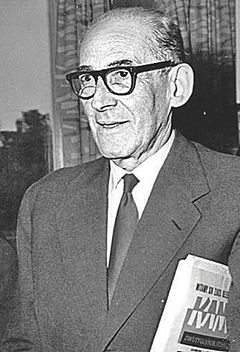

Jan Brzechwa

Życiorys
Lata młodości
Był synem Aleksandra Stanisława Lesmana, który był inżynierem kolejowym i często zmieniał miejsce zamieszkania. Młodość spędził na Kresach Wschodnich. Uczył się w Zakładzie Naukowo-Wychowawczym Ojców Jezuitów w Chyrowie, a po ukończeniu w nim nauki, wyjechał do Warszawy i rozpoczął studia na Wydziale Prawa Uniwersytetu Warszawskiego. Jednocześnie z zapisaniem się na studia wstąpił do 36 pułku piechoty Legii Akademickiej i jako ochotnik uczestniczył w latach 1920–1921 w wojnie polsko-bolszewickiej.
Działalność zawodowa
Z zawodu był adwokatem[b]. W latach 1924–1939 był radcą prawnym ZAiKS-u. Był specjalistą w dziedzinie prawa autorskiego, które wybrał jako specjalizację studiów[c].
Jako specjalista prawa autorskiego reprezentował w sądzie m.in. Zenona Przesmyckiego („Miriama”) w sprawie toczącej się przeciwko poecie Tadeuszowi Piniemu, który poprzez wydanie edycji dzieł Cypriana Kamila Norwida bez zgody właściciela praw autorskich, Przesmyckiego, naruszył jego prawa do spuścizny po Norwidzie.
Po II wojnie światowej Brzechwa powrócił do zawodu prawnika, był m.in. radcą prawnym w Spółdzielni Wydawniczej „Czytelnik”; jednocześnie działał w PEN Clubie. Był również członkiem rzeczywistym Międzynarodowej Komisji Prawa Autorskiego[2].
Twórczość
Jeszcze jako nastolatek zadebiutował w 1915, kiedy to opublikował swoje pierwsze wiersze w piotrogrodzkim „Sztandarze” oraz w kijowskich „Kłosach Ukraińskich”. Nie wiązał jednak wówczas swej przyszłości z karierą pisarską – chciał zostać prawnikiem.
Po demobilizacji w 1920 i rozpoczęciu studiów prawniczych zaczął dorabiać jako autor tekstów satyrycznych oraz piosenek i skeczy. Współpracował wówczas z takimi znanymi kabaretami, jak m.in.: Qui Pro Quo, Czarny Kot czy Morskie Oko. Posługiwał się najczęściej pseudonimami „Szer-Szeń” oraz „Inspicjent Brzeszczot”.
W 1926 ogłosił tom poezji Oblicza zmyślone. Pierwszy tomik wierszy dla dzieci – Tańcowała igła z nitką wydano w 1938 (w tym tomiku znalazły się takie popularne do dziś wiersze, jak: Pomidor, Żuraw i czapla, czy też Na straganie). Rok po wydaniu pierwszego tomu z wierszami dla dzieci, w 1939 wydano tom Kaczka Dziwaczka (m.in. wiersze: Znaki przestankowe i Sójka).
Podczas II wojny światowej (tuż przed jej wybuchem mieszkał w Warszawie przy ul. Żurawiej 35[7]) uniknął wywózki do getta czy obozu zagłady, mimo iż się nie ukrywał; był wówczas robotnikiem rolnym w gospodarstwie na Służewcu[8].
Na ten okres przypada jeden z najważniejszych okresów twórczości bajkopisarza – napisał on w tym czasie takie utwory, jak m.in. Akademia pana Kleksa czy Pan Drops i jego trupa. Dwie książki kontynuujące Akademię... (Podróże pana Kleksa i Tryumf pana Kleksa) napisał kolejno w 1961 i w 1965.
Brzechwa był zaprzyjaźniony z grafikiem Janem Marcinem Szancerem, autorem licznych ilustracji do jego tekstów. W latach 50. XX w. pisał socrealistyczne wiersze propagandowe, gloryfikujące partię (do której sam nie należał) i ustrój socjalistyczny (np. Marsz, Głos Ameryki). W latach późniejszych nie angażował się w twórczość polityczną, uchodził za biernego kontestatora ustroju. W 1964 podpisał list pisarzy polskich, protestujących przeciwko listowi 34, wyrażając protest przeciwko uprawianej na łamach prasy zachodniej oraz na falach dywersyjnej rozgłośni radiowej Wolnej Europy, zorganizowanej kampanii, oczerniającej Polskę Ludową[9].
Powrót do strony głównej